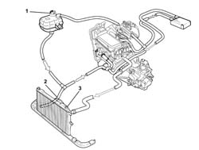
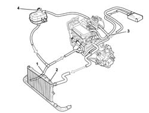
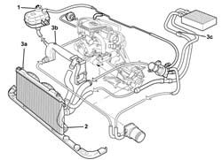
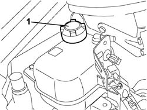
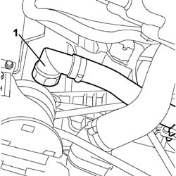
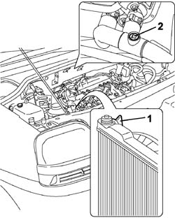
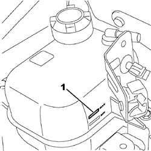
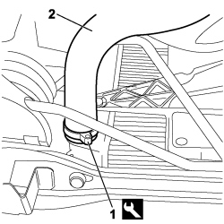
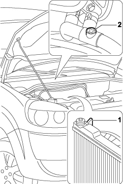

0010T20 coolant change
- Path
- Procedures > 00 MAINTENANCE > 0010 NEW VEHICLES AND MAINTENANCE > 0010T VEHICLE FLUIDS > 0010T20 coolant change
- Kind
- repair procedure (removal / refitting; the operation number is the code)
- Applies to
- engines: 1.2 8v, 1.4 8v, 1.3 JTD 16V, 1.9 DIESEL; all production periods
- Interactive page
- https://sloeber94.github.io/elrnDB-fDbl/en/#/2584122
Applies to: engines: 1.2 8v; all production periods
Drain the engine cooling system by carrying out the operations listed below.
Op. 7055B54 PROTECTION/GUARD UNDER ENGINE - R.R.
1. Undo the expansion tank cap.
Position a suitable container for collecting the engine coolant underneath the radiator.
2. Disconnect the lower radiator hose and drain the engine coolant into the container.
3. Open the bleed on the heater coolant pipe and wait until the cooling system has drained completely.

Applies to: engines: 1.2 8v; all production periods
Refill the engine cooling system by carrying out the operations listed below.
Take a suitable quantity of coolant.
Type | Component | Description | Qty. | |
|---|---|---|---|---|
- | Fluid | ENGINE COOLING CIRCUIT | PARAFLU' | 5.3 |
1. Connect the lower engine radiator pipe and secure it using a new band.
Slowly pour the coolant (50% mixture of water and Paraflu) into the coolant reservoir to maintain the level close to the MIN mark.
2. Tighten the bleed fitting on the radiator as soon as coolant emerges from the threaded hole on the bleed fitting.
3. The continuous bleeding operation shown in the figure allows residual air to be removed from the circuit.
End the operation of the refilling the engine coolant as soon as the MAX level indicating maximum permitted level in the expansion tanek is reached.
4. Close the expansion tank cap.
Start up the engine and let it idle for at least 2 to 3 minutes.
If necessary, top up by adding coolant to the MAX mark.
Pump the accelerator regularly (every 30 seconds) and gradually to increase engine speed to 3/4 of the maximum power speed.
Wait for the fan to come on at least once.
Keep the engine idling for 5 minutes.
Make sure that hot air comes out of the passenger compartment vents to confirm that the coolant is circulating.
Stop the engine and wait until the coolant has cooled down.
Check that the level of the engine coolant is between the MIN and MAX marks on the expansion tank.
If necessary, top up the level, undoing the cap and introducing engine coolant.
Type | Component | Description | Qty. | |
|---|---|---|---|---|
- | Fluid | ENGINE COOLING CIRCUIT | PARAFLU' | 5.3 |
Op. 7055B54 PROTECTION/GUARD UNDER ENGINE - R.R.

Applies to: engines: 1.9 DIESEL; all production periods
Drain the engine cooling system by carrying out the operations listed below.
Op. 7055B54 PROTECTION/GUARD UNDER ENGINE - R.R.
1. Undo the expansion tank cap.
Position a suitable container for collecting the engine coolant underneath the radiator.
2. Disconnect the lower radiator hose and drain the engine coolant into the container.
3. Open the bleed fittings on radiator (3a), on pump coolant intake pipe (3b) and on the coolant delivery sleeve to heater (3c).
Wait for the coolant system to drain fully.

Applies to: engines: 1.9 DIESEL; all production periods
Refill the engine cooling system by carrying out the operations listed below.
Take a suitable quantity of coolant.
Type | Component | Description | Qty. | |
|---|---|---|---|---|
- | Fluid | ENGINE COOLING CIRCUIT | PARAFLU' | 6.7 |
1. Connect the lower engine radiator pipe and secure it using a new band.
Slowly pour the coolant (50% mixture of water and Paraflu) into the coolant reservoir to maintain the level close to the MIN mark.
2. Tighten the bleed fitting on the radiator as soon as coolant emerges from the threaded hole on the bleed fitting.
3. Continue filling until the coolant emerges from the bleed holes on the delivery sleeve to the heater (3a) and the rigid pipe carrying water to pump (3b).
Tighten the bleed fittings.
End the operation of the refilling the engine coolant as soon as the MAX level indicating maximum permitted level in the expansion tanek is reached.
4. Close the expansion tank cap.
Start up the engine and let it idle for at least 2 to 3 minutes.
Pump the accelerator regularly (every 30 seconds) and gradually to increase engine speed to 3/4 of the maximum power speed.
Wait for the fan to come on at least once.
Keep the engine idling for 5 minutes.
Make sure that hot air comes out of the passenger compartment vents to confirm that the coolant is circulating.
Stop the engine and wait until the coolant has cooled down.
Check that the level of the engine coolant is between the MIN and MAX marks on the expansion reservoir.
If necessary, top up the level, undoing the cap and introducing engine coolant.
Type | Component | Description | Qty. | |
|---|---|---|---|---|
- | Fluid | ENGINE COOLING CIRCUIT | PARAFLU' | 6.7 |
Op. 7055B54 PROTECTION/GUARD UNDER ENGINE - R.R.
Applies to: engines: 1.3 JTD 16V; all production periods
1. With the engine cold, undo the engine coolant reservoir cap.

Applies to: engines: 1.3 JTD 16V; all production periods
1. Disconnect the lower radiator coolant outlet hose, radiator side.

Applies to: engines: 1.3 JTD 16V; all production periods
Carry out
Op. 1048A10 AIR FILTER ASSEMBLY - R.R..
1. Open the bleed on the radiator.
2. Open the bleed fitting on the single pipe carrying water to/from the heater.

Applies to: engines: 1.3 JTD 16V; all production periods
Wait for the coolant system to drain fully.
Connect the lower radiator coolant outlet hose, radiator side.
Keep the bleed fittings on the radiator and on the single pipe carrying water to/from the heater open.
Refill the system by slowly introducing the recommended coolant into the engine coolant reservoir until fluid comes out of the bleed fitting on the radiator.
Type | Component | Description | Qty. | |
|---|---|---|---|---|
- | Fluid | CHANGE ENGINE COOLANT | Mixture of 50% PARAFLU UP/water | 6.2 l |
Open the bleed fitting on the radiator.
Continue filling until fluid emerges from the bleed fitting on the single pipe carrying coolant to/from the heater.
Close the bleed fitting on the single pipe carrying water to/from the heater.
Carry out
Op. 1048A10 AIR FILTER ASSEMBLY - R.R..
1. Add more coolant to the MAX mark indicating the maximum permitted level in the expansion reservoir.

Applies to: engines: 1.3 JTD 16V; all production periods
Fully tighten the cap on the engine coolant reservoir.
Start up the engine and let it idle for about 2 minutes.
Pump the accelerator gradually and regularly (every 30 seconds) to a speed of approximately 3000 rpm until the fan goes on and off at least three times to remove the air from the system.
Stop the engine.
After leaving the engine to cool, top up to the MAX notch indicating the maximum permitted level in the expansion reservoir.
Applies to: engines: 1.4 8v; production: da 12/03; only with equipment: MY 2005
1. With the engine cold, undo the engine coolant reservoir cap.
Applies to: engines: 1.4 8v; production: da 12/03; only with equipment: MY 2005
1. Release the fastening collars using the special tool.
2. Disconnect the lower radiator coolant outlet hose, radiator side.

Applies to: engines: 1.4 8v; production: da 12/03; only with equipment: MY 2005
Carry out
Op. 1048A10 AIR FILTER ASSEMBLY - R.R.
1. Open the bleed on the radiator.
2. Open the bleed fitting on the single pipe carrying water to/from the heater.

Applies to: engines: 1.4 8v; production: da 12/03; only with equipment: MY 2005
Wait for the coolant system to drain fully.
Connect the lower coolant outlet sleeve from the radiator, radiator side, and secure with a new band.
Keep the bleed fittings on the radiator and on the single pipe carrying water to/from the heater open.
Refill the system by slowly introducing the recommended coolant into the engine coolant reservoir until fluid comes out of the bleed fitting on the radiator.
Type | Component | Description | Qty. | |
|---|---|---|---|---|
- | Fluid | CHANGE ENGINE COOLANT | Mixture of 50% PARAFLU UP/water | 7 l |
Open the bleed fitting on the radiator.
Continue filling until fluid emerges from the bleed fitting on the single pipe carrying coolant to/from the heater.
Close the bleed fitting on the single pipe carrying water to/from the heater.
Carry out
Op. 1048A10 AIR FILTER ASSEMBLY - R.R.
1. Add more coolant to the MAX mark indicating the maximum permitted level in the expansion reservoir.
Applies to: engines: 1.4 8v; production: da 12/03; only with equipment: MY 2005
Fully tighten the cap on the engine coolant reservoir.
Start up the engine and let it idle for about 2 minutes.
Pump the accelerator gradually and regularly (every 30 seconds) to a speed of approximately 3000 rpm until the fan goes on and off at least three times to remove the air from the system.
Stop the engine.
After leaving the engine to cool, top up to the MAX notch indicating the maximum permitted level in the expansion reservoir.
Topics linked from this page (2)
Topics that link to this page (50)
- 0510A30 cam lift - check with cam cover(s) removed
- 1004B10 POWER UNIT WITH MANUAL GEARBOX - R.R
- 1004B12 power unit with manual gearbox - r+r for versions with a/c
- 1008a46 TIMING SIDE POWER UNIT RIGID SUPPORT - R.R.
- 1008b10 power unit front mount (timing side) flexible block - replace
- 1016C10 cylinder head - r + r and replace gasket
- 1020A20 crank case oil sump - r + r clean seals for sealant application
- 1020B10 cover of timing system with chain drive - r + r replace oil seal and gasket
- 1020D26 flywheel side oil seal cover - r+r
- 1024B10 engine flywheel - r + r for versions with manual gearbox
- 1028H10 connecting rod and piston set - r r
- 1028H20 piston with connecting rod - r r
- 1032B46 toothed drive pulley - r + r
- 1032B60 bolt pulley - r r
- 1032A12 CHAIN AND GEARS for timing system - R.R. for timing or Replacement.
- 1032C40 Timing CHAIN TENSIONER PLATE - R.R.
- 1040B32 front fuel delivery line - r r
- 1060G14 engine coolant temperature sensor - r r
- 1072B50 sleeves connecting air capacity box to inlet manifold is - r+r
- 1080C80 exhaust gas water heat exchanger for egr valve r r
- 1080C82 E.G.R. - VALVE HEAT EXCHANGER ASSEMBLY - Connector PIPES - R.R.
- 1080E59 Fuel vapour PIPE from INTERMEDIATE pipe to ACTIVE CHARCOAL FILTER - R.R.
- 1084B12 engine oil pump - r+r
- 1084B26 emgine oil intake duct - r r
- 1084C12 Engine oil HEAT EXCHANGER, complete with engine oil filler and filter - R.R.
- 1084C20 radiant mass for engine oil cooling - r + r
- 1088B10 engine cooling tank - r + r
- 1088B20 engine cooling radiator - r + r
- 1088B24 engine cooling radiator - r r for air conditioned versions
- 1088B26 Engine cooling radiator AIR DUCT PROTECTION/ - R.R.
- 1088C10 water pump - r + r
- 1088C14 water pump - r + r with drive belt removed
- 1088C30 thermostat unit - r+r
- 1088C40 thermostat- r + r
- 1088D10 lower sleeve for coolant outlet from radiator - r + r
- 1088D14 upper sleeve for coolant inlet to radiator - r + r
- 1088D23 sleeve from thermostat to rigid pipe carrying fluid to pump - r r
- 1088D24 rigid pipe for coolant inlet to water pump - r + r
- 1088D47 oil exchange sleeve - r r
- 1088D53 RIGID supply or return PIPES for ENGINE OIL HEAT EXCHANGER - R.R.
- 1088D57 Engine coolant RETURN PIPE to SUPPLY RESERVOIR - R.R.
- 1088D92 hose from engine oil water heat exchanger to rigid pipe for egr system exhaust gas water heat exchanger r r
- 1088D94 rigid pipe for coolant between enginge oil water heat exchanger and exhaust gas water heat exchanger for egr system r r
- 1088D96 hose from rigid pipe for coolant to heat exchanger and exhaust gas water heat exchanger for egr system r r
- 1088D97 Coolant PIPE between EXHAUST GAS/WATER HEAT EXCHANGER and thermost unit - R.R.
- 1088E11 fans with single engine duct - r+r
- 1810A20 clutch - r + r
- 2110A10 manual gearbox and differential - r + r
- 5010A16 HEATER WATER RETURN PIPE - R.R.
- 5530A10 alternator - r+r